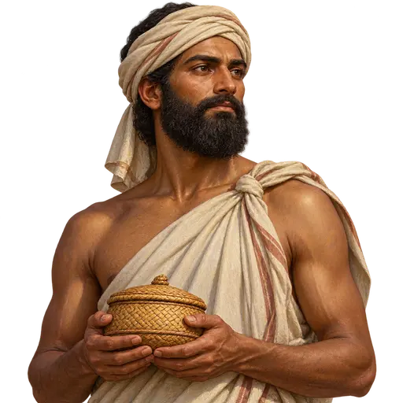
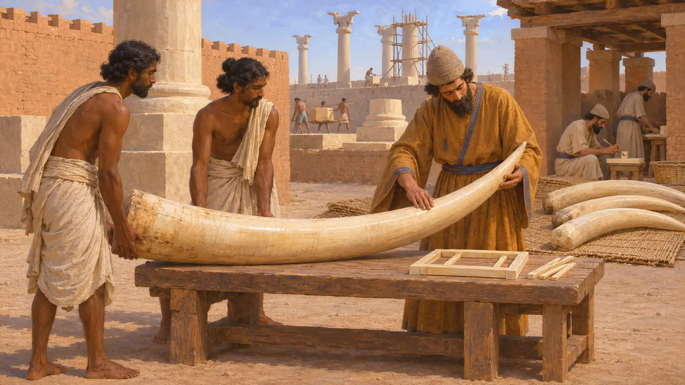
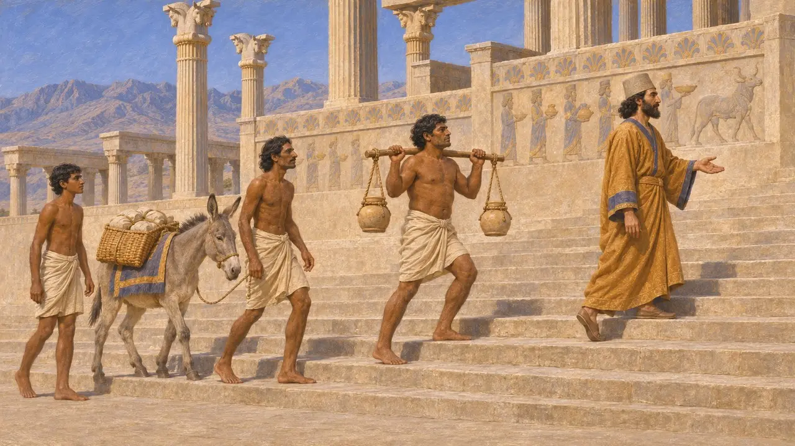
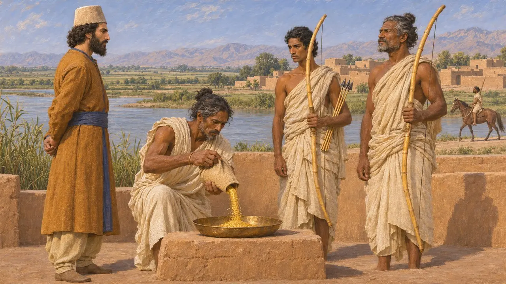
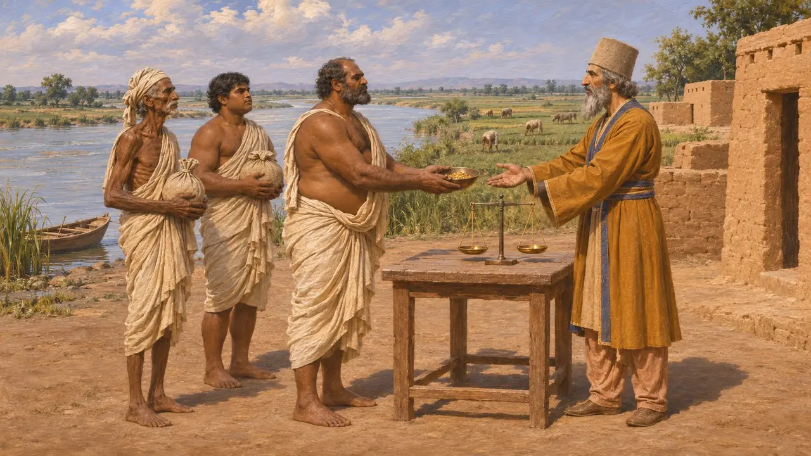
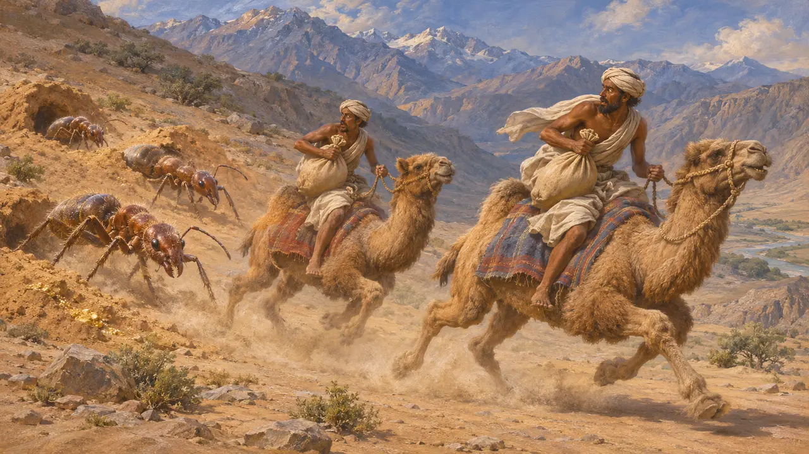
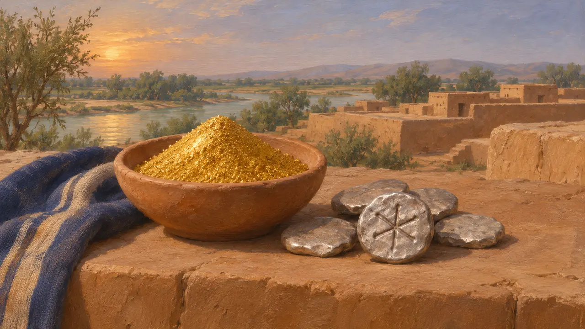

الهنود
شعوب هندوش، أراضي السند في الإمبراطورية الفارسية، بعد نحو 520 ق.م
في اللعبة: المستوى 5: الميثاق
سمّى الفرس الأراضي الممتدة على نهر السند «هندوش»، وسمّوا أهلها الهنود. والأرجح أن داريوس ضمّ هذه المنطقة إلى الإمبراطورية بعد عام 520 ق.م ببضع سنين، فغدت تخومها الجنوبية الشرقية. وأرسل الهنود إلى الملك الذهب والعاج والجنود، وعرفهم الكتّاب اليونانيون شعبًا قصيًّا تحفّ به الأعاجيب.
في اللعبة: تعامل اللعبة الهنود شريكًا تجاريًا وتُدرج الرماة الهنود في جيش الملك. يوافق أمرُ الرماة ما رواه هيرودوت، لكن هندوش بعد فتح داريوس لها كانت أرضًا خاضعة تؤدي الجزية لا شريكًا من الخارج، فهذا تبسيط.

هندوش في النقوش الملكية
في السجلاتهندوش هي الصيغة الفارسية القديمة لاسم النهر الذي سمّاه الهنود سندهو. ولا ترد في قائمة البلدان في بهستون، المنقوشة نحو عام 520 ق.م، لكنها تظهر بين بلاد الملك في نصوص لاحقة مثل نقش ضريح داريوس DNa ونقش خشايارشا XPh. ويقول داريوس في ميثاق البناء الذي وضعه في سوسا DSf إن العاج الذي صُنع في القصر جيء به من كوش وهندوش وأراخوسيا.
DB §6; DNa; DSf; XPh

مبعوثون على الأدراج والضريح
في السجلاتعلى أدراج الأبادانا في برسبوليس، يسير وفد يُعرَّف عادةً بأنه من الهنود، خفيف الثياب، يحمل جرارًا على نير يُرجَّح أنها مملوءة بتبر الذهب، ويقود حمارًا. ويظهر هندي أيضًا بين حاملي العرش المسمَّين على ضريح داريوس في نقش رستم. وتسجّل ألواح تحصينات برسبوليس حصصًا تموينية لجماعات مسافرة على الطرق بين الهند والموطن الفارسي.
Apadana reliefs, Persepolis; DNe; Persepolis Fortification tablets

تبر الذهب وأقواس القصب عند هيرودوت
رواية قديمةيصف هيرودوت الهنود بأنهم أكثر الشعوب التي عرفها عددًا، ويذكر أنهم كانوا يؤدّون كل عام 360 وزنة من تبر الذهب، أكثر من أي إقليم آخر. ويقول إن داريوس أرسل سكيلاكس الكارياندي منحدرًا في نهر السند ثم أخضع الهنود. وفي جيش خشايارشا سنة 480 ق.م يصف هنودًا يلبسون القطن ويحملون أقواسًا من القصب وسهامًا من القصب ذات رؤوس حديدية، فضلًا عن فرسان وعربات حربية هندية.
Herodotus 3.94; Herodotus 4.44; Herodotus 7.65; Herodotus 7.86

موقع هندوش وما كانت تؤدّيه
متنازع عليهيضع المؤرخون هندوش على امتداد نهر السند، في الوادي الأدنى أو في البنجاب، منفصلةً عن إقليمي غاندارا وثاتاغوش، غير أن حدودها موضع جدل. ويوحي غيابها عن نقش بهستون بأن داريوس فتحها بعد نحو عام 520 ق.م، وإن ظل التاريخ الدقيق مجهولًا. ويشكّ كثيرون في رقم الذهب الذي يورده هيرودوت، والذي يحوّله إلى فضة تفوق ما أدّاه أي إقليم آخر، ويرون أنه مبالغ فيه أو محرَّف.
P. Briant, From Cyrus to Alexander, 2002; Herodotus 3.95

النمل الحافر للذهب
أسطورة لاحقةيردّد هيرودوت حكاية يقول إنه سمعها من الفرس، مفادها أن هنود الشمال كانوا يجمعون الذهب من رمال يحفرها نمل أصغر من الكلاب وأكبر من الثعالب، ثم يفرّون منه على جمال سريعة. وأضاف كتّاب يونانيون لاحقون مثل كتيسياس عجائب هندية أخرى. ويربط بعض الباحثين المعاصرين هذه القصة بحيوانات المرموط التي تحفر جحورها في الجبال، غير أن ذلك يبقى ضربًا من التخمين.
Herodotus 3.102-105; Ctesias, Indica

الشعار بجانب الاسم
متنازع عليهشعار الهند في اللعبة شمس ذات ستة أذرع من أقدم النقود الفضية المختومة في شبه القارة. وهذه النقود أحدث قليلًا من عهد داريوس، فالشعار مفارقة زمنية ببضعة عقود، اختير لأنه أقدم علامة لتلك البلاد. ويقول هيرودوت إن الهنود أدّوا أكبر جزية، تبرًا من الذهب.
J. Cribb, Investigating the Introduction of Coinage in India, 1985; Herodotus 3.94
المصادر
- Herodotus, Histories 3.94-105, 4.44, 7.65, 7.86
- Royal inscriptions DB, DNa, DNe, DSf and XPh
- P. Briant, From Cyrus to Alexander, 2002
- A. Kuhrt, The Persian Empire: A Corpus of Sources, 2007
- M. C. Root, The King and Kingship in Achaemenid Art, 1979